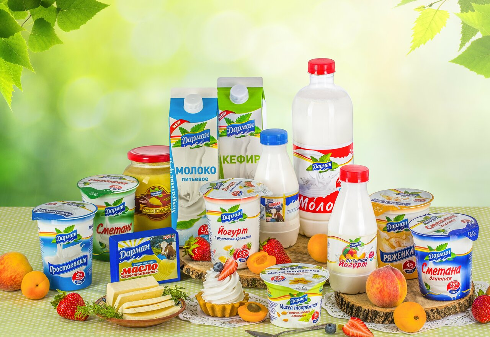

Продукция

Молочная продукция
«Дарман» - это семья вкусных и натуральных
молочных продуктов. Наши продукты произведены
исключительно из натурального сырья, с использованием современных технологий. Молочные
продукты
«Дарман» - вкусно и здорово!

Мясо-колбасная продукция
Разнообразные колбасы и копчености мы
изготавливаем из собстенного сырья с соблюдением
всех норм Халял. Мясные продукты «Дарман» - аппетитные традиции
Востока.

Напитки
Наша продукция изготавливается с из чистой артезианской воды. В газированных напитках мы
используем натуральные и сертифицированные ингридиенты. Воды «Дарман» - натуральный
освежающий
вкус.